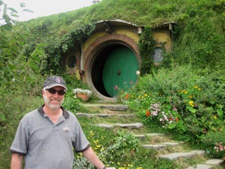

- Home |
- Blog |
- Lithography |
- Published Works |
- For Profit |
- About Chris
- | Gentleman
- | Scientist

Auckland, NZ, February 11 – 15, 2013
(The following diary appeared first as a daily blog at http://life.lithoguru.com/ and is reproduced here in a slightly edited form.)
G’day! Greetings from Auckland, New Zealand. I’m here attending the Sixth International Conference on Advanced Materials and Nanotechnology (AMN-6). As the name implies it has been a week of graphene, buckyballs, and nanotubes, biologically inspired surfaces, quantum effects, and self-assembled everything. While there were some talks on “top-down” fabrication (like traditional lithography), most of the emphasis was on “bottoms up”: letting the physics of some process naturally create small structures. I saw the self-assembly of nanostructures using block copolymers of course, but also using the shear forces of spin coating, dewetting during evaporation, and deep reactive ion etching. One definitely gets one’s quota of strange ideas at a conference like this.
AMN always attracts Nobel Prize winners (I’m not the only one who likes to come to New Zealand), and this year Roald Hoffmann (Chemistry, 1981) gave a keynote speech and a public lecture. Both were excellent. The keynote looked at the use of the diamond anvil to put materials at pressures up to one million atmospheres (similar to the pressure at the center of the earth). At these pressures everything becomes a metal. His public lecture (at the Auckland Museum) was more philosophical, looking at the many tensions in chemistry. Some memorable quotes from that lecture:
“Beauty resides at the boundary between order and chaos.”
“Chemistry is less in the business of discovery and more in the business of creation.”
“My papers are written for the intelligent graduate student, and I have a lot of trouble getting them published as a result.”
Alas, many (most?) of the talks at this conference were aimed a little higher than the intelligent graduate student, and I couldn’t follow quite a few of them. I enjoyed hearing Mike Kelly (University of Cambridge) complain that many of the ideas promoted by nanotechnologists were inherently non-manufacturable. “Manufacturability is the key gateway to everything. It should be our main focus.” He was doubtful that any bottoms-up approach to fabrication could ever become manufacturable (the problem: defects). The few lithography talks (Richard Blaikie, Idriss Blakey, and a few others) were of course of interest to me, but the real value of a conference like this is to pull your head out of the details of your current problem domain and see a broad range of activities in nanoscience. For that, the conference has been a success.
The last evening of the conference gave us the banquet. It being Valentine’s day, the requested dress was described as “smart, with a hint of romance.” Unfortunately, I only packed “dumb, with no chance of romance.” But, since it was a nanotechnology conference, I wasn’t out of place.
When the last day of the conference rolled around on Friday, I decided to skip out. It is time to see the important landmarks of this beautiful country. Cheers!

Chris Mack is a writer and lithographer in Austin, Texas.
© Copyright 2013, Chris Mack.
Diaries from other lithography conferences...